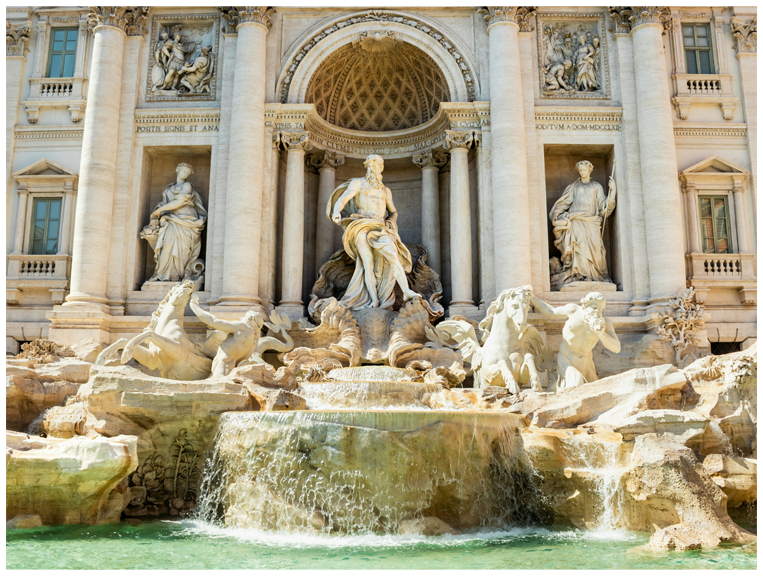
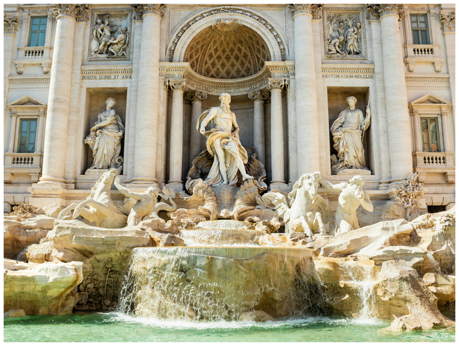

HOW IT WAS BUILT
The Trevi Fountain took more than thirty years to construct, beginning in 1732 under architect Nicola Salvi after a competition held by Pope Clement XII. Its foundation rests on the end point of the Aqua Virgo.
Salvi designed the fountain as a dramatic, stage-like façade rising from the Palazzo Poli, blending sculpture, architecture, and waterworks into one unified masterpiece.
The materials used were primarily Travertine stone quarried from Tivoli, shaped into rushing waves and rocky cliffs. After Salvi’s death, Giuseppe Pannini completed the fountain.
The project used large blocks of Travertine transported by wagon, while the sculpture work required master carvers under Rome’s papal workshops.
The fountain merges architecture and hydraulic engineering in one design.